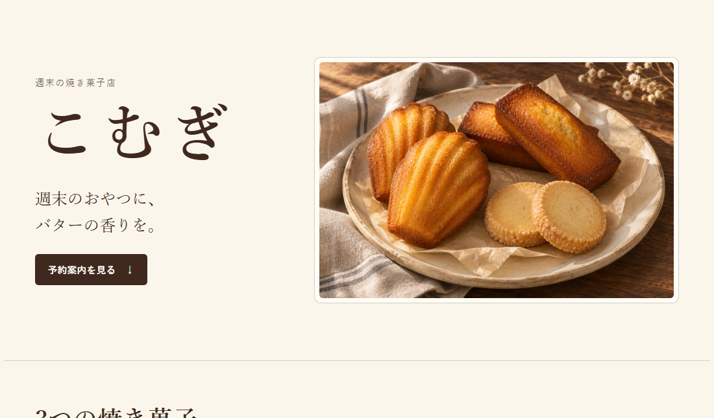
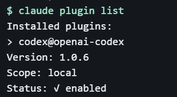
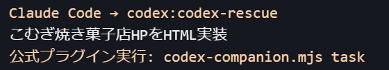
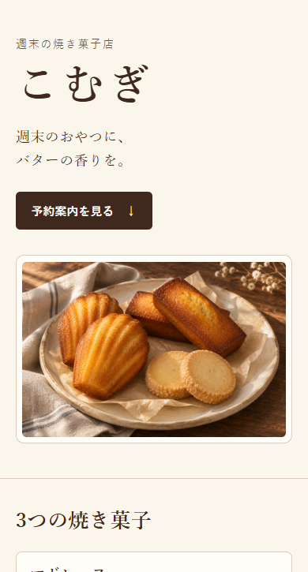

みな流 Claude×ChatGPT 連携実践ガイド
完成したデモHPを見る連携の解説動画
構成はClaude、手を動かすのはCodex。焼き菓子店のHPで、この役割分担を試してみます。
こんな気持ち、ありませんか？
AIは2つ使っているけど、どっちに何を頼むか迷う。
下書きはできるのに、見直しまで手が回らない。
子どもが寝たあと、短い時間で作業を進めたい。
私も、家事と育児で一日が終わっていました
専業主婦だった頃は、AIを仕事に使うなんて思ってもいませんでした。子どもが寝てからのわずかな時間が、私の作業時間でした。
今は、考えるところと手を動かすところをAIに分けて頼んでいます。私が決めるのは、何を作るかと、出来上がりをどうするか。
まずは、やりかけの作業をひとつ選んでみてください。
ここから先はLINE登録者限定 🎁
『おうちワーク始め方ガイド』5大特典を無料プレゼント中

家事や育児の合間に、AIでできる仕事を探すなら。仕事の選び方から発信まで、最初に迷いやすいところを『AIマネタイズの教科書』にまとめました。
登録でもらえる5大特典
- AIマネタイズの選び方
時間と得意なことから、自分に合う仕事を探す。
- ChatGPTで使える収益化プロンプト集
アイデア出しや発信に使える指示文を紹介。
- AIマネタイズの実践テンプレート
次にやることを迷わず決めるための型。
- 収益化に役立つ生成AIツール3選
作業に合わせたツールの使い分け。
- AI×SNSで収益につながった実践事例
実際に何を試し、どう改善したかが分かる。
画像をタップすると、LINE登録ページが開きます。特典の内容や配布期間は変更される場合があります。
献立と料理みたいに、考える役と作る役を分ける
料理する
献立を考える
HPづくりでは、Claude Codeが構成を考え、Codexがページを作ります。
今回つくるもの
焼き菓子店「こむぎ」のデモHP

完成したデモHPを開くHPを開いたら、「予約案内を見る」を押してみてください。架空のお店の練習用ページです。
HPの設計ノート
お店の紹介から予約案内まで
最初の画面
写真と店名で雰囲気を伝え、予約案内のボタンを置く。
焼き菓子の紹介
マドレーヌ、フィナンシェ、サブレの3種類を並べる。
予約・受け取りの案内
冒頭のボタンから同じページ内の案内へ移動。
パソコンで一緒にやってみよう
Claude CodeとCodexをつなぐ3STEP
Windowsで試した手順です。Claude Code、Node.js 18.18以上、ChatGPTアカウントを用意します。
Claude Codeを入れる公式手順 ↗-
Windowsターミナルで追加する
Windowsターミナルを作業フォルダで開き、上から1行ずつ実行します。
claude plugin marketplace add openai/codex-plugin-cc --scope localclaude plugin install codex@openai-codex --scope localclaude plugin listでCodexがenabledなら追加できています。
実行結果の抜粋。 localは作業フォルダに適用。 -
Claude Codeを開く
同じターミナルでClaude Codeを起動します。
claudeすでに起動している場合は、下のコマンドで読み込みます。
/reload-plugins -
Codexの接続を確認
/codex:setupready to useが出たら、接続の準備は完了。Claudeのログイン期限が切れていた場合
OAuth session expiredと出たら、ターミナルでClaudeに再ログインします。実際のエラー表示。タップで拡大。 claude auth loginブラウザでログインしたら、同じ作業フォルダで
Claude Codeのログイン手順 ↗/codex:setupをやり直します。WindowsでCodexを起動できないとき
Exec format errorが出たら、Git Bashで次のコマンドを試します。codex --versionバージョンが出なければ、公式のWindows用CLIを用意し、Git Bashで起動できる状態にします。その後、Claude Codeを開き直し、
Codex CLIの公式インストール手順 ↗/codex:setupを実行します。Codexが未導入なら、表示された案内に沿ってインストールします。
Codex側が未ログインなら、次のコマンドを実行し、ChatGPTにログインします。
!codex loginログイン後は
/codex:setupを再実行し、準備できたことを確認します。
焼き菓子店のHPを作る
- 作業フォルダ内に
komugi-demoを作ります。 - 練習用の写真を保存 ↓
bakes.pngの名前でそのフォルダに入れます。 - 下の指示文をコピーし、Claude Codeの入力欄へ。

デモHPを作るプロンプト
架空の焼き菓子店「こむぎ」の、スマホ向け1ページHPを作りたいです。週末にマドレーヌ、フィナンシェ、サブレをテイクアウトできるお店という設定です。 まずClaude Codeで、お店の雰囲気、初めての人に伝えること、ページを読む順番、予約案内への導線を短く設計してください。その設計を表示したら、codex:codex-rescue に --wait を付けて、下の条件と一緒に実装を依頼してください。 ・komugi-demo/index.html を作成。CSSはHTMLの中に書き、単体でブラウザ表示できるようにする ・用意した焼き菓子の写真 komugi-demo/bakes.png を参照する。画像の差し替えや外部画像の取得は不要 ・クリーム色と焦げ茶を中心に、写真が映える素朴で上品なデザイン。日本語で読みやすくする ・上から「お店の紹介」「3つの焼き菓子」「受け取り・予約案内」。冒頭の「予約案内を見る」ボタンは同じページの id="reserve" へ移動させる ・架空店のデモだと分かる表示を入れ、実際の予約や外部サービスへの送信は行わない ・幅390pxとPCで読めるレスポンシブな設計にし、見出しの切れや横スクロールが出ないようにする ・既存ファイルは上書きしない。Codex側で書き込めない場合は、完成したHTML全文を結果として返し、Claude Codeが同じ内容を保存する 実装のあと、Claude Codeはファイルを確認し、予約ボタンの移動先と、スマホで確認する点を教えてください。連携できなければ止まった場所を教えてください。

ブラウザで開いて、ボタンを試す
komugi-demo の中にあるindex.html を開きます。スマホ幅で横にはみ出さず、ボタンを押すと予約案内に移動すればOKです。

HTMLファイルが作られないとき
Codexの結果にHTMLがあり、ファイルだけがないときは、Claude Codeに保存を頼めます。
Codexが返したHTMLをそのまま、komugi-demo/index.html に保存してください。同名ファイルがあれば上書き前に確認してください。作業が止まったとき
/codex:setup で接続を確認。作業中の状態を知りたいときは/codex:status を試します。
忙しい日は途中で区切ってOK
すきま時間で進める3日プラン
- 1日目
連携を済ませ、接続まで確認する。
- 2日目
写真を用意して、デモHPの実装を頼む。
- 3日目
スマホ幅で開き、予約案内のボタンを試す。
最初の1件を進めるチェック
Instagramだけでは伝えきれない
AI×SNSの話を、もっと詳しく
無料オープンチャット「みな AI×SNS活用術」
オプチャで発信すること
- AIを使って試した仕事の進め方
- SNS投稿に取り入れた工夫
- うまくいかなかったことと改善例

画像をタップするとオープンチャットが開きます。